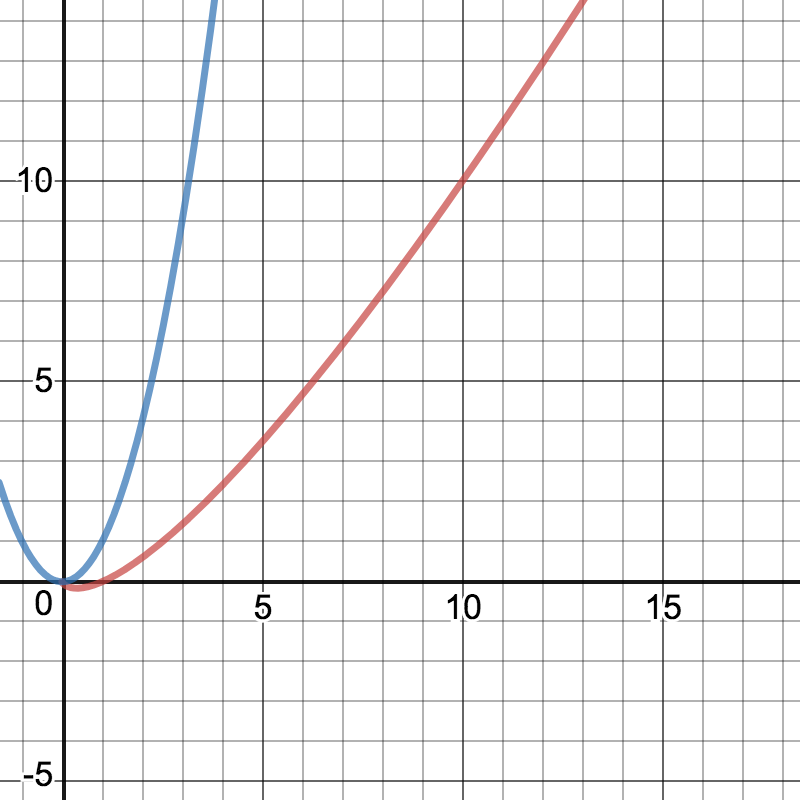

Algorithm Performance
See the Resources section to get this presentation
Gil Pratte
http://gilpratte.comhttps://github.com/gpratte
http://full-stack-software.info
Quote
“It takes a good mathematician to be a computer scientist, but a middling one to be an effective programmer. . . . When it get real, break out the comp sci. When you're doing anything a hundred trillion times, nanoseconds delays add up. Systems slow down, users get cranky, money burns by the barrel.”
Big O
Wikipedia“In computer science, big O notation is used to classify algorithms according to how their running time or space requirements grow as the input size grows.”
Big O
Khan Academy“We use big-Θ notation to asymptotically bound the growth of a running time to within constant factors above and below. Sometimes we want to bound from only above.”
The term asymptotic means approaching a value or curve arbitrarily closely (i.e., as some sort of limit is taken).
Math is a four letter word
This presentation will barely touch on the math to calculate an algorithm's performance.
See Wikipedia and its references for a rigorous definition.
Big O Performance
CalculatorO(1)
Access a cell in an array.
No matter what the size of the array the time is always constant to access one cell.
O(log n)
Binary search.
Best case O(1) and worst case O(log n).
O(n)
Return the average of the cells if an array of numbers.
Access all n cells of the array.
O(n2)
Bubble sort.
Best case O(n) and worst case O(n2).
Graph

Click here for a better graph
Sorting
Bubble Sort
| input → | 2 | 3 | 4 | 1 | n=4 |
| 1st sort → | 2 | 3 | 1 | 4 | change |
| 2nd sort → | 2 | 1 | 3 | 4 | change |
| 3rd sort → | 1 | 2 | 3 | 4 | change |
| 4th sort → | 1 | 2 | 3 | 4 | no change |
| 16 cells inspected = 42 = O(n2) | |||||
Better sorting O(nlog(n))
- Quicksort
- Mergesort
- Heapsort
Graph
Click here for a better graph
Python Quicksort
Fast Sorting in NumPy
“By default np.sort uses an O(nlog(n)), quicksort algorithm, though mergesort and heapsort are also available.”
Java Quicksort
Arrays.sort
“The sorting algorithm is a Dual-Pivot Quicksort . . . . This algorithm offers O(n log(n)) performance on many data sets that cause other quicksorts to degrade to quadratic performance, and is typically faster than traditional (one-pivot) Quicksort implementations.”
Java Quicksort
Source codepublic static void sort(int[] a) {
DualPivotQuicksort.sort(a, 0, a.length - 1, null, 0, 0);
}
Not all math
In an interview many years ago I was shown some code and asked why it was not performant.
Answer: Converting the map to a string should be done in the if statement of the logger, not when passing the argument.
Continued on next slide...
Not all math
public class Main {
public static void main(String[] args) {
Map map = new HashMap<>();
map.put(1, "one");
new Logger().log(4, map + "");
}
}
class Logger {
int logLevel; // set from property file
public void log(int level, String message) {
if (level > logLevel) {
System.out.println(message);
}
}
}
Memory Performance
Execution time is not the only measurement of performance. Memory usage can also affect performance.
Let's briefly make a couple of points regarding memory performance.
Stack
“Sometimes a request goes too hard, for example, calling itself so many times that the stack, which is a finite resource, fills up and can't take it anymore. Hence the name of the website Stack Overflow, where programmers go to answer questions and help each other solve bugs. It's the 62nd most visited website in the world, trailing Craigslist by a few spots.”
Heap Memory
The more memory your program uses the more time is needed to reclaim it. It can result in excessive garbage collection.
Examples of wasting memory are
- In Java creating many objects when a singleton would do
- String concatenation
Resources
- On Heroku for a limit time
https://algorithm-big-o.herokuapp.com/
Note that Heroku may take up to a minute (or more) to load the website - GitHub
Clone https://github.com/gpratte/algorithm-performance-presentation.git. and then open index.html in a browser. - PDF
PDF